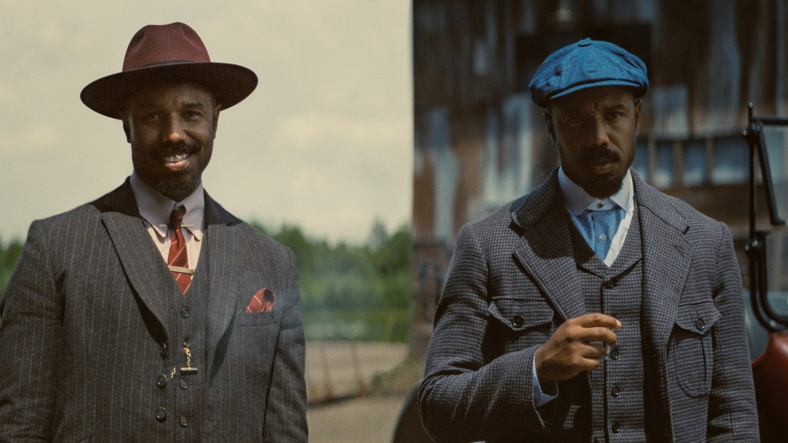
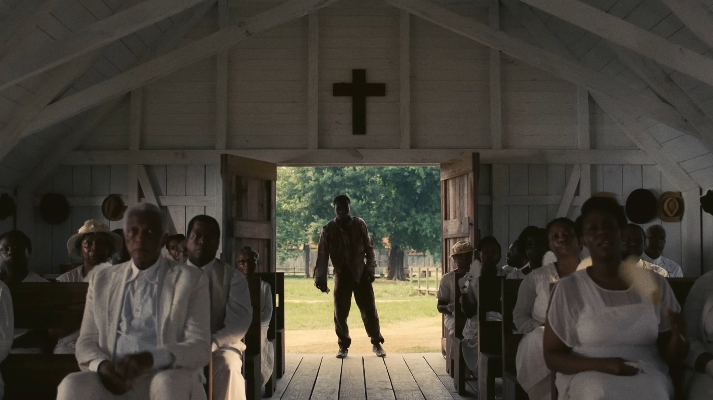

Sinners di Ryan Coogler: 8 curiosità sul film
Uno zio che amava il blues, due formati di pellicola mai usati insieme e un contratto che a Hollywood non si vedeva quasi mai: i retroscena di Sinners
Due gemelli che tornano a casa nel Mississippi del 1932 per aprire un locale dove suonare il blues, e una notte che si trasforma in un incubo. Sinners, uscito in Italia come I peccatori il 17 aprile 2025 con Warner Bros., è il primo film originale di Ryan Coogler dopo anni passati tra Rocky e la Marvel: un horror musicale, storico e politico che porta sullo schermo la storia di una comunità e della sua musica. Ecco otto cose da sapere.
Tutto nasce da uno zio e dai suoi dischi
Il film è profondamente personale. A far conoscere il blues a Coogler è stato lo zio James, scomparso mentre il regista lavorava a Creed, e il nonno materno del regista veniva proprio dal Mississippi prima di trasferirsi a Oakland. Il produttore Sev Ohanian ha descritto la scrittura della sceneggiatura come un'esperienza quasi spirituale, in cui Coogler sentiva vicini i suoi antenati.
Due formati di pellicola, per la prima volta insieme
Sinners è il primo lungometraggio girato combinando le macchine da presa IMAX a pellicola 65 mm e il formato Ultra Panavision 70, quello dei grandi kolossal in cinemascope. Coogler voleva un racconto epico anche quando la storia resta chiusa dentro un locale di campagna, e la differenza si vede soprattutto sugli schermi più grandi.
Una direttrice della fotografia che ha fatto la storia
Dietro la macchina da presa c'è Autumn Durald Arkapaw, che con questo film è diventata la prima donna a dirigere la fotografia di un film girato su pellicola IMAX. Un primato che sarebbe stato seguito da un altro, ancora più grande, nei mesi successivi.

Michael B. Jordan, due volte
Jordan interpreta entrambi i gemelli Moore, Elijah detto Smoke ed Elias detto Stack, e ha dovuto costruire due personaggi riconoscibili anche senza differenze di trucco evidenti. Per le scene in cui i fratelli condividono l'inquadratura, la produzione ha usato un'attrezzatura con più camere chiamata Halo Rig, impiegata in oltre la metà delle inquadrature con i due gemelli insieme e affiancata alle tecniche di split-screen. Il sodalizio tra Jordan e Coogler dura da circa quindici anni ed è iniziato con Fruitvale Station, l'esordio del regista.
Un esordiente con la chitarra
Accanto a Jordan, in un cast che comprende Hailee Steinfeld, Wunmi Mosaku, Jack O'Connell e Delroy Lindo, c'è un volto nuovo: Miles Caton, al suo primo film, nel ruolo del giovane musicista Sammie Moore. Coogler lo ha scoperto e scelto proprio per il suo talento musicale, centrale in una storia in cui il blues ha quasi un potere soprannaturale.
Una chitarra del 1932 per la colonna sonora
Ludwig Göransson, compositore di fiducia di Coogler, ha scritto le musiche usando anche una chitarra resofonica Dobro del 1932, lo stesso anno in cui è ambientato il film. Le registrazioni si sono svolte ai Royal Studios con musicisti blues come Alvin Youngblood Hart e Cedric Burnside, per un suono il più possibile vicino alla tradizione del Delta.
Un contratto quasi senza precedenti
Per realizzare il film, Warner Bros. ha accettato condizioni rarissime: una percentuale sugli incassi fin dal primo dollaro, il montaggio finale affidato al regista e, soprattutto, il ritorno della proprietà del film a Coogler dopo venticinque anni. Un accordo di questo tipo, a Hollywood, era riservato finora a pochissimi nomi, come Quentin Tarantino.
Fra venticinque anni, questo film sarà del suo regista.
I costumi arrivano da un altro film
La costumista Ruth E. Carter, premio Oscar per Black Panther, ha riutilizzato le ricerche fatte per Blade, il film Marvel rimasto bloccato, e ha acquistato costumi d'epoca realizzati originariamente per quel progetto. Le riprese si sono svolte a New Orleans tra il 14 aprile e il 17 luglio 2024.
Costato circa 100 milioni di dollari, il film ne ha incassati, a fine corsa, oltre 360 nel mondo. Aggiornamento di marzo 2026: agli Oscar ha ottenuto 16 candidature, record assoluto, e quattro statuette, tra cui quella per Michael B. Jordan e la prima vinta da una donna per la fotografia. In Italia Sinners è disponibile in abbonamento su Sky e NOW.
Domande frequenti
Come si chiama Sinners in Italia?
In Italia il film di Ryan Coogler è uscito con il titolo I peccatori, il 17 aprile 2025, distribuito da Warner Bros.
Dove vedere Sinners in streaming?
In Italia è disponibile in abbonamento su Sky e NOW.
Chi interpreta i gemelli in Sinners?
Entrambi i fratelli, Elijah detto Smoke ed Elias detto Stack, sono interpretati da Michael B. Jordan.